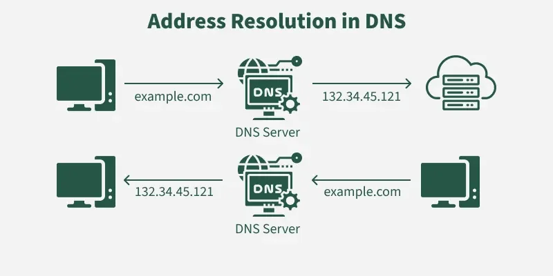

It is an internet service that translated human-readable names into machine-readable IP addressed. Operates in a hierachical and distributed manner. It is essential for the functioning of the internet, allowing users to access websites and other online resources using easy-to-remember domain names instead of complex IP addresses. DNS servers are responsible for resolving domain names to their corresponding IP addresses, enabling communication between devices on the internet.
When a user enters a domain name into a web browser, the DNS resolution process begins. The browser first checks its local cache for the IP address associated with the domain name. If it is not found, the browser sends a query to the configured DNS resolver, which then follows a series of steps to resolve the domain name to an IP address. The resolver may query multiple DNS servers, starting from the root DNS servers and working down through the hierarchy until it reaches the authoritative DNS server for the domain. Once the IP address is obtained, it is returned to the browser, allowing it to establish a connection with the web server hosting the requested resource.
